Национальный парк Лос-Гласьярес расположен в южных Андах, в провинции Санта-Крус в южной части Аргентины на границе с Чили. Он поражает всех своей великолепной естественной красотой, потому в 1981 году объявлен ЮНЕСКО Всемирным наследием человечества.
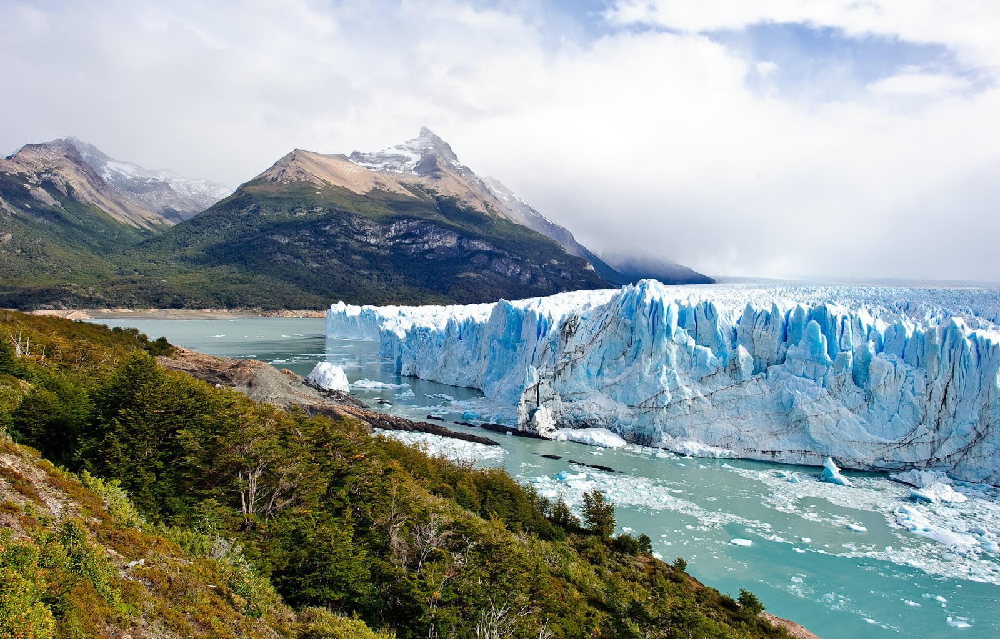
Своим существованием парк обязан огромному ледниковому образованию в Андах, из которого питается около полусотни ледников.
Южно-патагонский ледяной щит считается третьим по величине на планете (после Антарктиды и Гренландии), к западу и востоку от него отходят мощные ледники.
В Чили языки ледников спускаются в Тихий океан, в Аргентине ледники спускаются в озера. В парке Лос-Гласьярес это крупнейшее в Аргентине озеро Архентино площадью 1466 км² на юге и озеро Вьедма площадью 1100 км² в северной части.
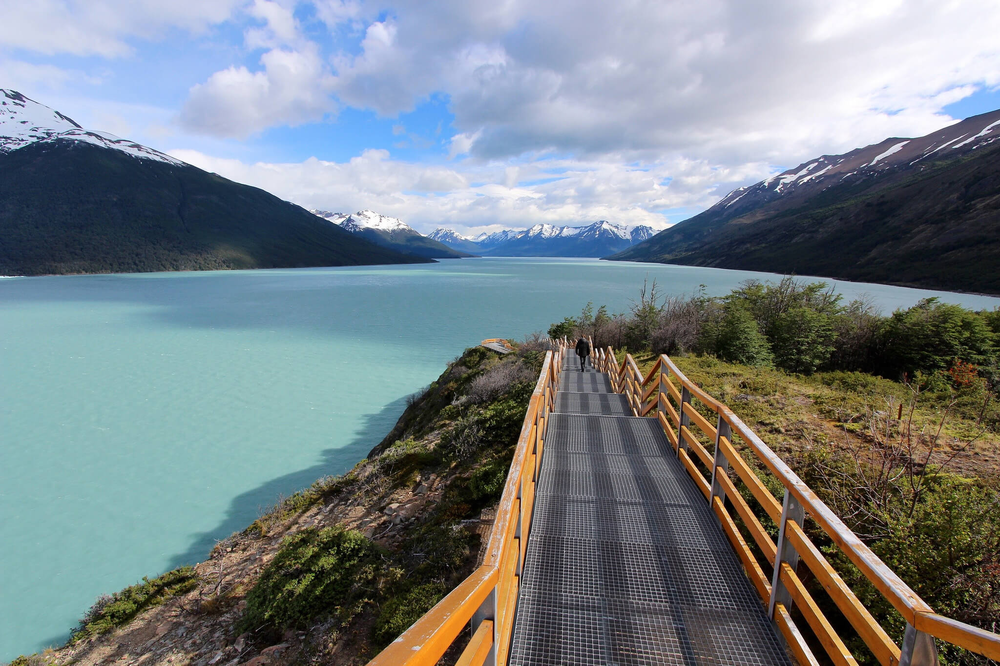
Популярной достопримечательностью Национального парка Лос-Гласьярес является ледник ледник Упсала. Но чем же он так интересен?
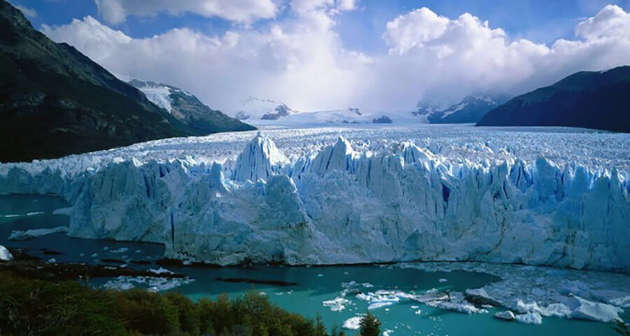
Это самых большой ледник в Южной Америке, чья площадь достигает 870 квадратных километров. Во-вторых, этот ледник вместе со своими "братьями" питает Озеро Вьедма, и окрашивает воды озера Лаго-Архентино в необычный молочно-зеленый оттенок.
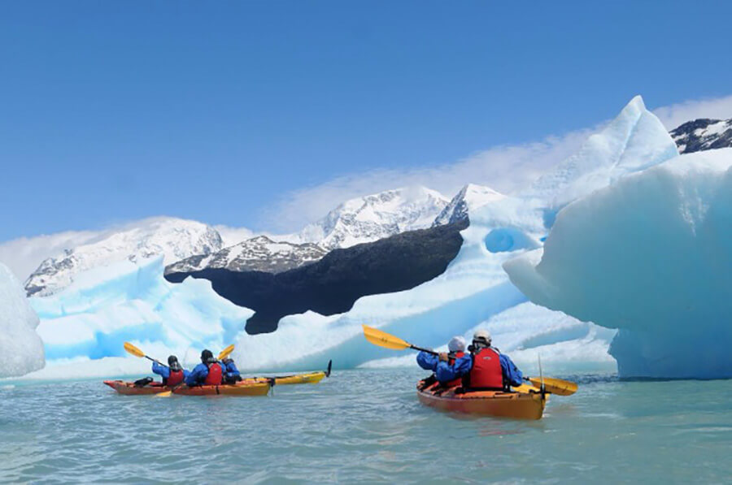
Свое имя ледник получил в честь шведского университета, который первым инвестировал средства в изучение аргентинских ледников. К тому же, из-за изменений климата ледник Упсала теряет свои былые формы. С 2001 года его площадь сократилась на 3 километра.
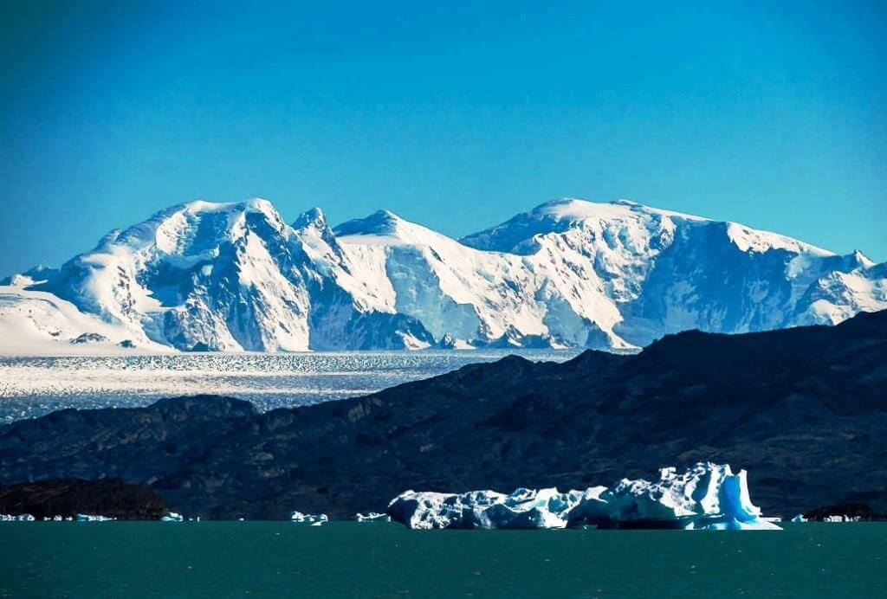
Поспорить за титул самого известного ледника парка Лос-Гласьярес может также Перито Морено.
Благодаря своему непрерывному движению, ледник приобрел мировую славу. Учитывая темпы глобального потепления, Перито Морено является одним из немногих ледников, которые продолжают расти. Постепенно наращивая ледяные покровы, ледник Перито-Морено превращается в природную дамбу, которая перекрывает поток воды к озеру Архентино.
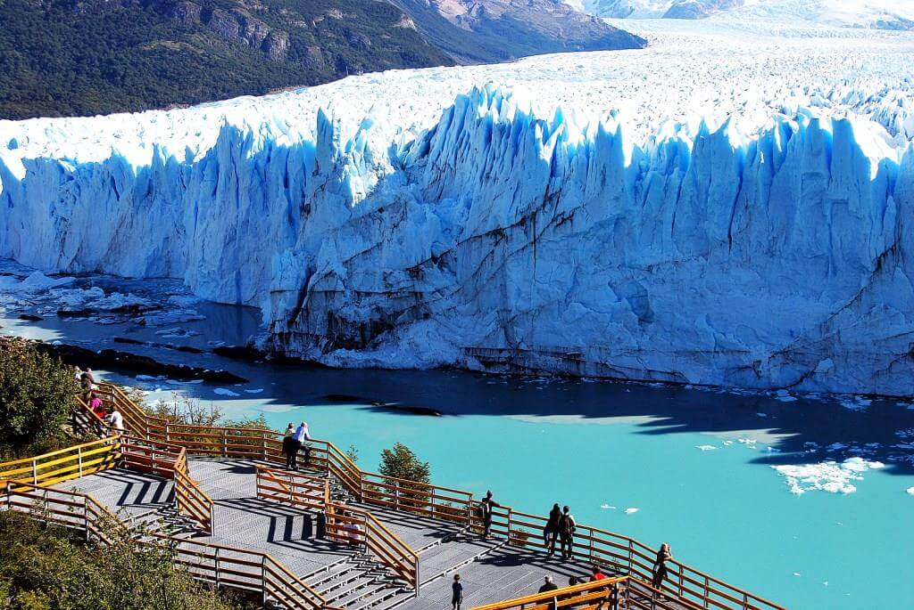
Однако, из-за сильного напора ледяной заслон не выдерживает и разрушается - превращаясь в весьма зрелищное событие. Предсказать, когда падет ледяной барьер и появится новая дамба, практически невозможно: иногда это происходит каждый год, иногда задерживается на десятилетия.
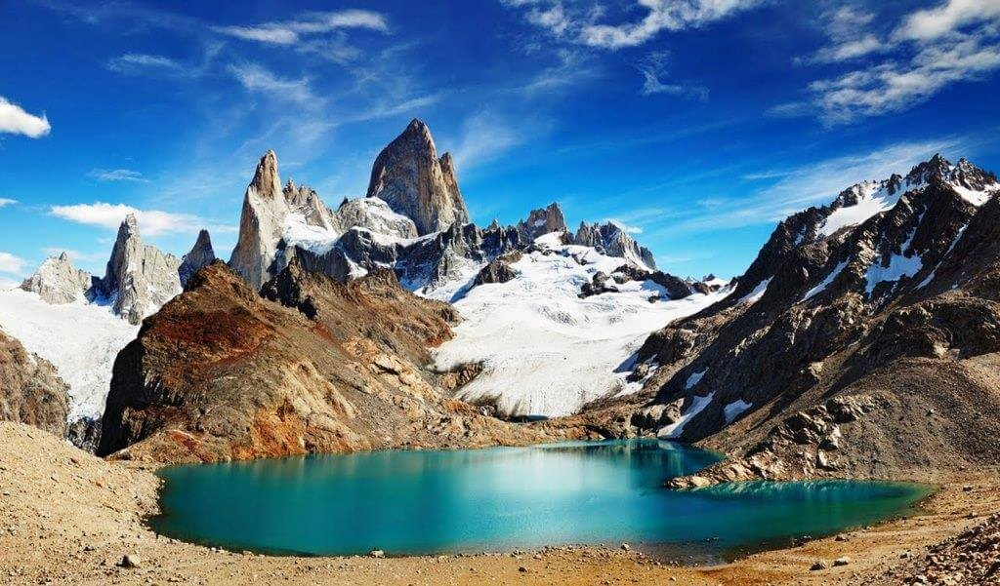
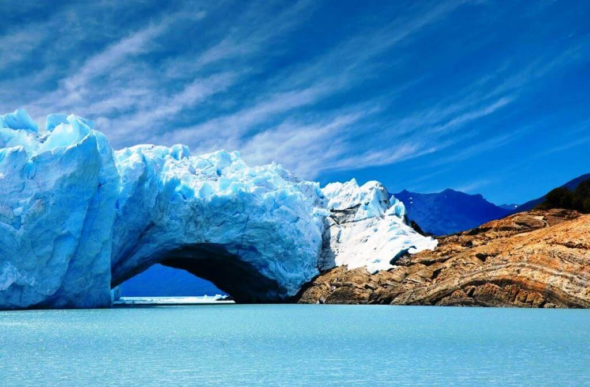
Однако недостатка в растительности здесь совсем не ощущается. Лос-Гласьярес расположен в трёх природных зонах: на востоке раскинулись бескрайние патагонские степи с мелкими растениями, дальше к западу начинаются буковые леса, которые ближе к горам сменяются приполярным Магеллановым лесом.
Этот лесной массив, самый южный на Земле, произрастает на горных склонах Анд вплоть до самых ледников, доходя до высоты 1 тыс. м над уровнем моря.
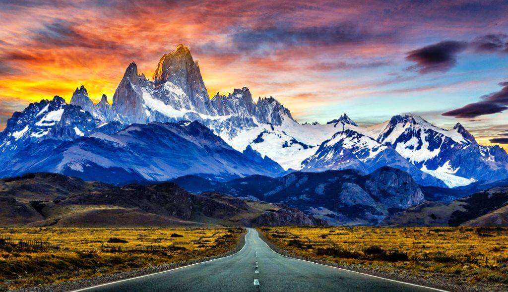
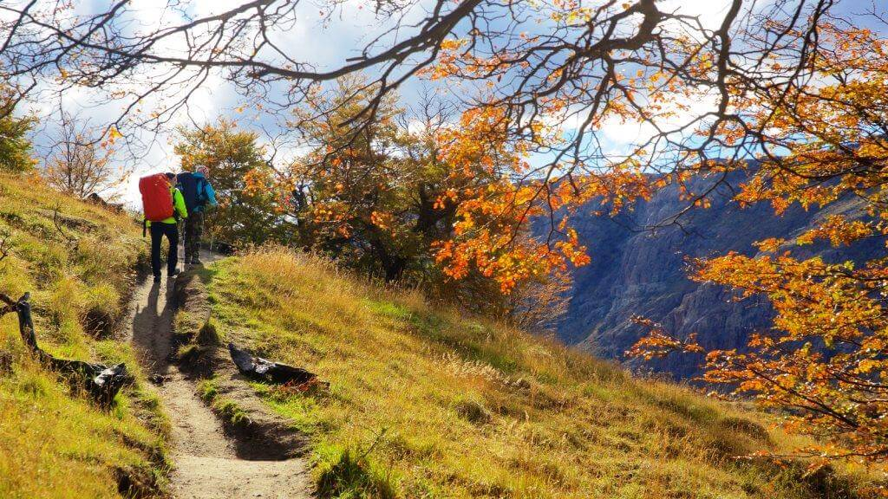
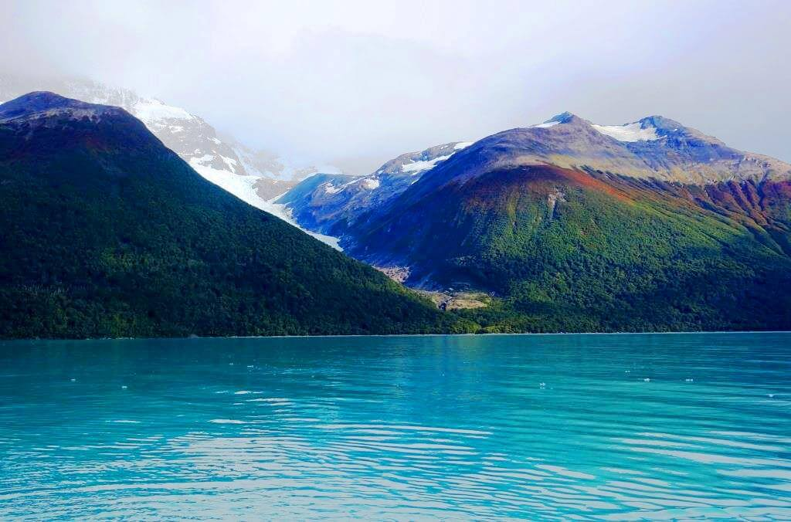
ВВЕРХ